Päivämäärä: 22.1.2022
Opiskelija: Erik Ramm-Schmidt
Minun koneella (Windows 10) oli jo asennettu VirtualBox versio 6.1.
Tämän installaation tukena käytettiin Tero Karvisen ohjeet (https://terokarvinen.com/2021/install-debian-on-virtualbox/)..
Latasin koneelle debianin ISO kuvan Tero Karvisen ohjeissa löytyneestä linkistä https://cdimage.debian.org/images/unofficial/non-free/images-including-firmware/current-live/amd64/iso-hybrid/debian-live-11.2.0-amd64-xfce+nonfree.iso
Avasin Virtualboxin ja loin uuden Virtuaalikoneen painamalla "New"
Avasin virtualbox ohjelman. Klikkasin "New" ikonia.
Valitsin seuraavat asetukset: Name: "debian", Type:Linux, Version: Debian (64-bit)
Valitsin muistin suuruudeksi 8192 MB
Valitsin seuraavaksi "Create a virtual hard disk now" ja klikkasin "Create"
Valitsin kovalevyn tyypiksi VDI
Seuraavaksi valitsin että kovalevyn suuruus on "Dynamically allocated"
Nyt minulla oli debian niminen Virtuaalikone
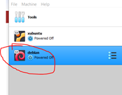
Menin debian virtuaalikoneen järjestelmäasetuksiin painamalla "Settings" ja tein seuraavat asetukset prosessorille ja näytönohjaajalle
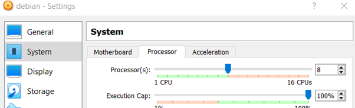
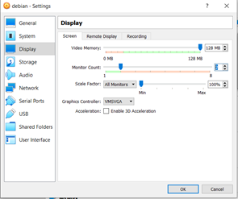
Menin Storageen ja lisäsin debian ISO kuvan kuten ohjeissa (Settings → Storage → Controller IDE Empty → IDE Secondary Device → Valitse debian ISO kuva)
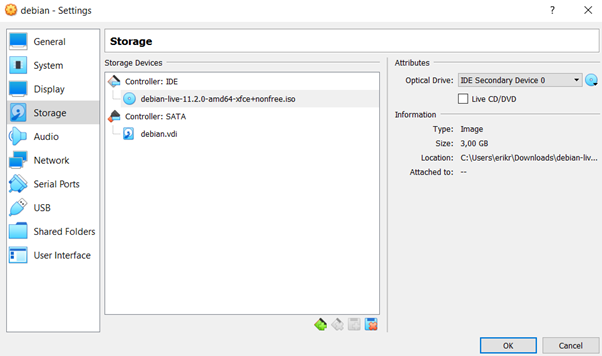Starttasin debian Virtuaalikoneen tuplaklikkaamalla
Valitsin ensin "Live Kernel" vaihtoehdon
Pääsin toimivaan Debianiin
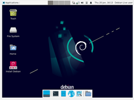Avasin Firefoxin ja katsoin Youtubevideon ja totesin että netti ja ääni toimii.
Tuplaklikkasin "Install Debian" ikonia.
Tuli ilmoitus että tietokoneella ei ole tarpeeksi levytilaa.
Painoin "Cancel" ja suljin virtuaalikoneen.
Menin debian-virtuaalikoneen asetuksiin VirtualBoxissa: Settings → Storage
En löytänyt sieltä tapaa laajentaa tallennustilaa, mutta pystyin poistaamaan virtuaalisen kovalevyn, ja tein sen.
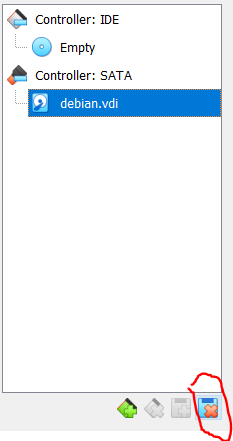Tämän jälkeen lisäsin uuden virtuaalisen levyaseman
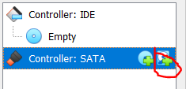Valitsin "Create"
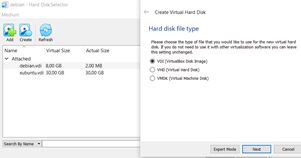Ja hieman isomman kovalevyn (edellinen oli 8GB)
Nyt näytti tältä
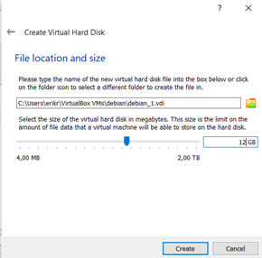Starttasin taas debian virtuaalikoneen
Tuli ilmoitus että bootable media puuttuu
Lisäsin bootable median kuten olin tehnyt jo aiemmin
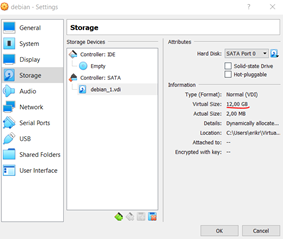Käynnistin virtuaalikoneen
Valitsin live version
Tarkistin taas että ääni ja netti toimii menemällä youtubeen.
Tuplaklikkasin "Install Debian" ikonia
Ei virheilmoitusta tällä kertaa, valitsin kieleksi "American English" ja "Next"
Valitsin Region = Europe ja Zone = Helsinki ja painoin "Next"
Valitsin Keyboard model = Finnish Default ja painoin "Next"
Valitsin "Erase Disk" ja painoin "Next"
Annoin nimitietoni ja valitsin salasanan ja painoin "Next".
Painoin vielä kerran "Next" ja installaatio alkoi
Pienen odottelun jälkeen asennus oli valmis. Kaikki tuntui toimivan, mutta resoluutio ei ollut ihan oikea, virtuaalikoneen näyttö oli liian pieni.
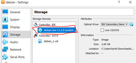Kirjoitin "sudo apt-get update" komentotulkissa ja painoin Enter. Kone näytti päivittävän itsensä.
Palasin Tero Karvisen tekstiin missä oli osio resoluutio-ongelmasta (Install Guest Additions for Good Resolution).
Seurasin ohjeet:
Devices → Insert Gurest Addtions CD Image
Klikkasin ikonia:
Avasin komentotulkin ja kirjoitin
cd /media/*/VBox*
ls
sudo bash VBoxLinuxAdditions.run
Tämän jälkeen käynnistin koneen uudelleen, ja nyt kuva täyttää koko näytön.
Sain myös toisen näytön näkyviin: View → Virtual Screen 2 → Enable
Kaikki toimi nyt, paitsi että Windows 10 tehtäväpalkki oli näkyvissä myös Full Screen Mode:issa. Googlasin ongelman ja se hoitui uudelleenkäynnistämällä Windows Explorerin (Task Managerissa).
“Raportin kirjoittaminen.” Tero Karvinen, 4.6.2006, https://terokarvinen.com/2006/raportin-kirjoittaminen-4/. Luettu 20.1.2022.